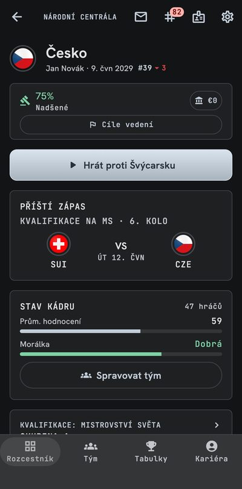
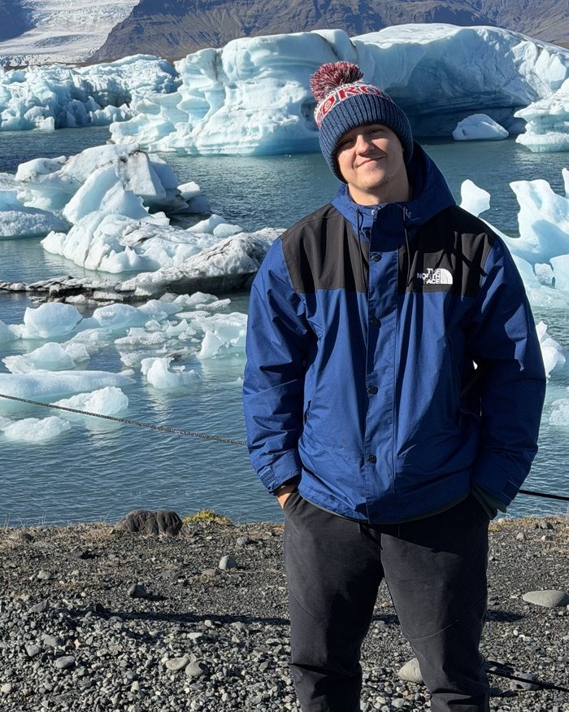

Každý zápas se počítá v telefonu. Nepotřebujete účet ani připojení k internetu. Uloženou hru si pak můžete přenést do jiného telefonu či tabletu.
Španělsko, nebo Zimbabwe? Jiné výzvy, jiné problémy. Přestoupit k jiné reprezentaci můžete i mezi cykly.
Kvalifikace, kontinentální pohár, mistrovství světa a... znovu. Losy, volba pořadatele a vše, co k mezinárodnímu fotbalu patří.
Měňte rozestavení, střídejte, v poločase zvedněte morálku. Nebo to prostě zavřete... a bacha na Csaplárovu past!
Od U-13 po U-21. Sledujte mladíčky už od začátku (časem přibudou i mládežnické reprezentace).
Hlídejte vytížení hráčů i jejich přestupy. Všechno ovlivňuje morálku i kondici.
Pozor na to, neuvážené odpovědi mohou vyvolat tlak. A na sociální síti Y si pak na vás smlsnou!
Rozvíjejte svůj profil, nastavujte rozpočty a směřování celé federace, plňte cíle.
Spokojenost svazu je vše. Menší neúspěch vám možná prominou, ale po velkém propadáku se pakujete. A pak může přijít nabídka jen od Andorry.
Historicky nejlepší střelci zemí i šampionátů a spousta dalšího. Svět kolem žije a vy byste měli držet krok!
Zahrajte si celý cyklus zdarma a bez omezení. Hodina dvě, a budete vědět, jestli vám hra sedí.
Manažer je ve vývoji od jara 2026 a chystají se další věci: editor, mládežnické reprezentace, výzvy. Pokud se vám hra líbí, podpořte prosím projekt zakoupením plné verze.
Telefony
Tablety

Jmenuji se Martin a jsem vývojář, cestovatel a milovník fotbalu. Odmala jsem místo stříleček hrál fotbalové manažery, a právě proto vznikl tenhle projekt.
Chtěl jsem něco rychlého, co si zahrajete na záchodě i v tramvaji a offline v letadle, ale co má zároveň dost hloubky a nekonečné hraní. Máte nápad na vylepšení? Přidejte se na Discord, nebo mi klidně napište na e-mail.